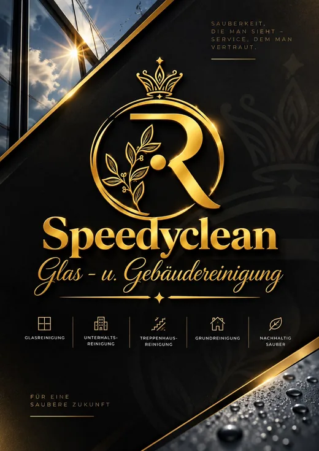

Glas
Glas✦
Glas- & Fensterreinigung
Fenster, Schaufenster, Glasfassaden und Glasflächen in bester Sicht.
Mehr erfahrenSaubere Fenster. Gepflegte Räume. Ein gutes Gefühl. Speedyclean ist Ihr Ansprechpartner für professionelle Reinigung bei Ihnen zu Hause oder in Ihrem Unternehmen.

Was wir für Sie tun
Unsere wichtigsten Leistungen auf einen Blick. Ausführliche Informationen finden Sie auf den jeweiligen Leistungsseiten.
GlasFenster, Schaufenster, Glasfassaden und Glasflächen in bester Sicht.
Mehr erfahren Glas
Glas Gebäude
Gebäude Gebäude
Gebäude Gebäude
Gebäude AußenProfessionelle Reinigung
AußenProfessionelle ReinigungGlasreinigung aus Leidenschaft
Ob Fenster am Einfamilienhaus, Schaufenster oder größere Glasflächen: Wir kümmern uns darum, dass der Blick wieder frei wird.
Sie teilen uns mit, was gereinigt werden soll. Wir besprechen den Aufwand und finden gemeinsam eine passende Lösung.
Mehr zur GlasreinigungSo einfach geht’s
Ganz unkompliziert: Beschreiben Sie kurz Ihren Reinigungswunsch. Auf Wunsch können Sie Fotos mitsenden.
Anfrage startenWählen Sie die gewünschte Reinigung aus und beschreiben Sie Ihren Auftrag kurz.
Wir klären Fragen, Zugänglichkeit und den passenden Leistungsumfang.
Zum vereinbarten Termin kümmern wir uns um die Reinigung.
Erfahrungen unserer Kunden
Echte Rückmeldungen zu unserer Fensterreinigung, Wintergartenreinigung und weiteren Arbeiten im Havelland.
„Trotz der vielen Fenster war alles am Ende streifenfrei und gründlich gereinigt.“
„Glasflächen und Rahmen sind sauber geworden, auch schwer erreichbare Stellen wurden mit berücksichtigt.“
„Die Reinigung meiner Terrassenüberdachung wurde sehr gründlich und genau nach meinen Vorstellungen durchgeführt. Die Arbeit war sauber, zuverlässig und professionell.“
„Super zufrieden. Folgetermin habe wir gleich vereinbart. Dadurch lässt es sich perfekt planen“
In Ihrer Nähe
Speedyclean hat seinen Sitz in Rathenow und ist im Havelland sowie in angrenzenden Orten für Privat- und Geschäftskunden im Einsatz. Weitere Entfernungen prüfen wir gern nach Absprache.
Reinigung für Ihr Objekt anfragen ↗Rathenow & Havelland
Angrenzende Orte – nach Absprache
Weitere Orte sind je nach Auftrag und Anfahrt möglich. Fragen Sie gern unverbindlich an.
Gut zu wissen
Hier finden Sie Antworten auf häufige Fragen vor einer Reinigungsanfrage.
Ja. Über unsere Kontaktseite können Sie uns Ihren Reinigungswunsch schildern. Wir besprechen den Umfang und erstellen ein passendes Angebot.
Ja. Wir reinigen unter anderem Wintergärten, Glasdächer und Terrassenüberdachungen. Für eine Einschätzung helfen uns Fotos und Angaben zur Zugänglichkeit.
Ja, zum Beispiel für Büros, Gewerberäume und Treppenhäuser. Häufigkeit und Umfang vereinbaren wir passend zum Objekt.
Unser Schwerpunkt liegt in Rathenow, Premnitz, Brandenburg an der Havel und im Havelland. Auch Einsätze beispielsweise in Schollene, Havelberg und Stendal sind nach Absprache möglich.
Bereit für saubere Ergebnisse?
Senden Sie uns Ihre Anfrage oder rufen Sie uns direkt an.